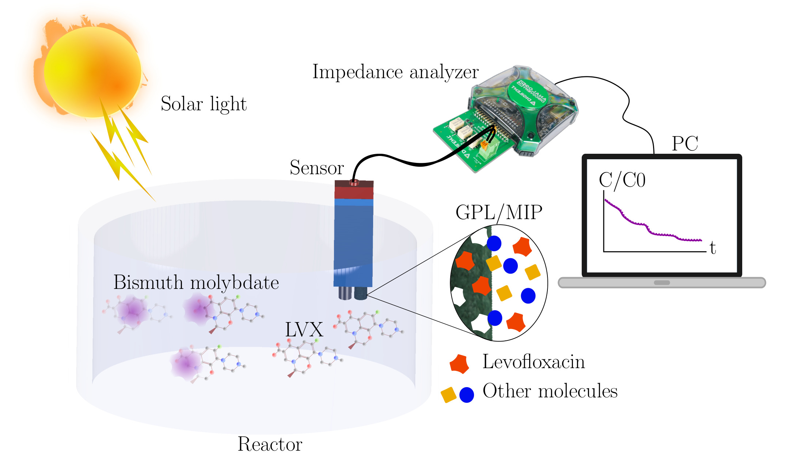

Paper Accepted
Agu 27th, 2026

Our paper Continuous Monitoring of the Photocatalytic Degradation of
Levofloxacin Using an Impedimetric Sensor-Based System has been accepted for publication in the Special Issue Applications of
Electrochemical Technology in Wastewater Treatment and Seawater Desalination of the Processes.
Developing portable and reliable systems for online monitoring of antibiotic degradation in water is essential for studying,
optimizing, and improving their efficiency. In this work, we introduce an impedimetric sensor-based system for online
monitoring of the photocatalytic degradation of levofloxacin (LVX). The sensor consists of graphite pencil leads (GPL)
modified with molecularly imprinted polymers (MIP) to ensure specificity and enhance sensitivity. The sensor was
evaluated in a concentration range of 0 to 40 mg/L of LVX, achieving a detection limit of 1.3 mg/L, and subsequently
tested in a photocatalytic degradation process. All measurements were validated using high-performance liquid chromatography (HPLC).
Based on the results, the proposed system is a promising alternative to conventional analytical methods for online monitoring of
degradation processes. This approach facilitates the optimization of degradation mechanisms, minimizing resource consumption and
reducing analysis and operation times, especially in resource-limited environments.